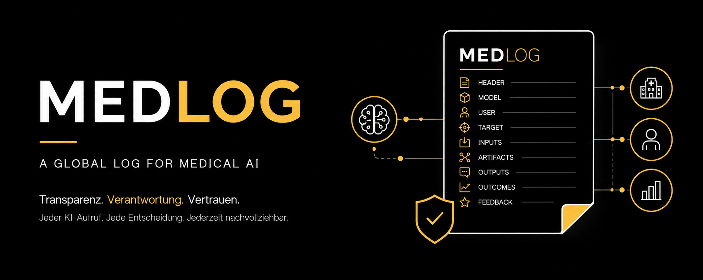

Von der Modellprüfung zur Betriebsbeobachtung
MedLog ergänzt Model Cards und Data Sheets um die operative Ebene: Es dokumentiert nicht nur, was ein Modell theoretisch kann, sondern wie es im realen Versorgungskontext tatsächlich eingesetzt wurde. Damit entsteht die Grundlage für Audit, Post-Market-Surveillance, Bias-Monitoring, Fehleranalyse und kontinuierliche Verbesserung.
Ein Mensch, ein Dienst, ein Algorithmus oder ein Agent löst einen Modellaufruf aus.
Header, Modell, Nutzer, Ziel und Eingaben werden initial protokolliert.
Reasoning-Spuren, RAG-Kontext, Risikoscores, Empfehlungen oder Zusammenfassungen werden ergänzt.
Klinische Folgehandlungen, Ergebnisse und Nutzerfeedback bleiben mit dem ursprünglichen Ereignis verbunden.
Was dieses Modul leistet
Der MedLog-Leitfaden überträgt wissenschaftliche Grundlagen in eine praxisorientierte Orientierungshilfe für Betreiberorganisationen.
Ziel ist eine belastbare Mindeststruktur, die Beschaffung, Pilotierung, Datenschutz, Audit, Monitoring und regulatorische Anforderungen frühzeitig miteinander verbindet.
Jeder KI-Aufruf ist ein Ereignis
MedLog dokumentiert den konkreten Einsatzzeitpunkt und macht klinische KI im Betrieb nachvollziehbar.
Agentische Workflows werden abbildbar
Run-ID und Parent-Event-ID verbinden mehrstufige KI-Prozesse ohne starre Architekturvorgabe.
Datenschutz bleibt Betriebsprinzip
Pseudonymisierung, Rollenrechte, Audit-Logs und Verweise statt Rohdaten reduzieren das Risiko.
Aus Logs wird Lernfähigkeit
Fehler, Near Misses, Bias und Drift werden sichtbar und können in Verbesserungszyklen überführt werden.
Das KI-MIG ist seit 29.07.2026 in Kraft (BGBl. 2026 I Nr. 223). Für MedLog praxisrelevant: Protokolle von Hochrisiko-KI-Systemen sind nach Art. 26 Abs. 6 EU-KI-VO mindestens 6 Monate aufzubewahren; bei Geschäftsaufgabe des Anbieters greift zusätzlich § 18 KI-MIG. Schwerwiegende, über MedLog erfasste Vorfälle sind unverzüglich der Bundesnetzagentur als zentraler Marktüberwachungsbehörde zu melden (Art. 73 EU-KI-VO i. V. m. §§ 7, 8 KI-MIG) – unabhängig von der durch den Digital Omnibus auf 2.12.2027 verschobenen vollen Pflichtenkulisse für Anhang-III-Systeme.
Basis-Checkliste
MedLog – 9 Kernfelder für klinische KI
Bewerten Sie, ob eine KI-Anwendung die neun MedLog-Kernfelder belastbar erfassen kann.
Die Bewertung dient als operative Readiness-Prüfung für Pilotierung, interne Freigabe und Auditvorbereitung.
Noch keine Bewertung vorgenommen.
Implementierung
Pragmatischer MedLog-Fahrplan
Minimalprofil starten
Beginnen mit Header, Modellinstanz und Output. Danach Nutzer, Ziel, Inputs und Outcomes stufenweise ergänzen.
Gateway nutzen
LLM-Proxies, API-Gateways oder Sidecar-Services können KI-Aufrufe abfangen und MedLog-konforme Einträge erzeugen.
Lebenszyklus steuern
Vollständiges Tracing in Pilot- und Updatephasen, risikobasierte Stichproben im Regelbetrieb, abgestufte Aufbewahrung.
Thomas Bade hat alle Inhalte inhaltlich geprüft, fachlich bewertet und freigegeben.
A global log for medical AI
Noori et al. beschreiben MedLog als ereignisbasiertes Protokoll für klinische KI, das neun Kernfelder, inkrementelle Datensatzerstellung, risikobasierte Erfassung, Datenschutzmechanismen und internationale Anschlussfähigkeit adressiert.